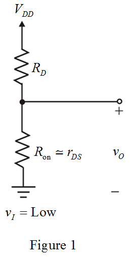

Determine the value of supply voltage.
Substitute  for
for  in the equation.
in the equation.
Thus, the value of supply voltage,  is
is  .
.
Refer to Figure 13.2 (a) in the text book.
Draw the equivalent circuit for output-low state.

Determine the value of supply voltage.
Substitute for in the equation.
Thus, the value of supply voltage, is .
The current drawn from the supply in the low-output state is,
Substitute  for
for  in the equation.
in the equation.
Write the expression for low-level output voltage.
Substitute  for
for  ,
,  for and
for and  for
for  in the equation.
in the equation.
Determine the value of resistance,  .
.
Substitute  for
for  in the equation.
in the equation.
Thus, the value of resistance,  is.
is.
Determine the value of width-to-length ratio.
Substitute  for
for 
 for
for 
 for
for  and
and  for
for  in the equation.
in the equation.

Thus, the value of width-to-length ratio,  is.
is.
Determine the value of power is drawn from the supply when the output is high.
In Figure 13.2 (a), the transistor is off when the output is high.
Thus, the value of power is drawn from the supply when the high-output, is.
Determine the value of power is drawn from the supply when the output is low.
Substitute  for
for  and
and  for
for  in the equation.
in the equation.
Thus, the value of power is drawn from the supply when the low-output, is .